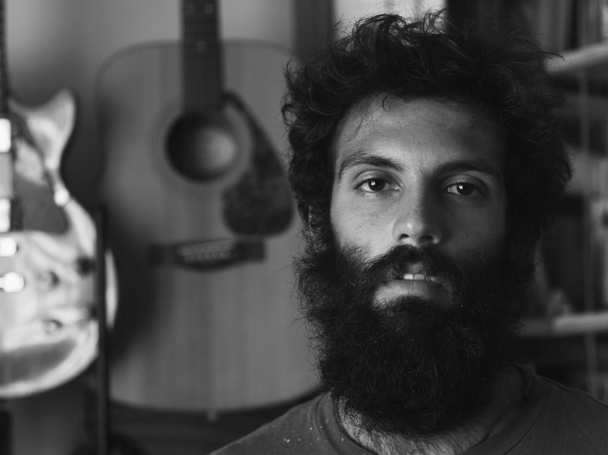
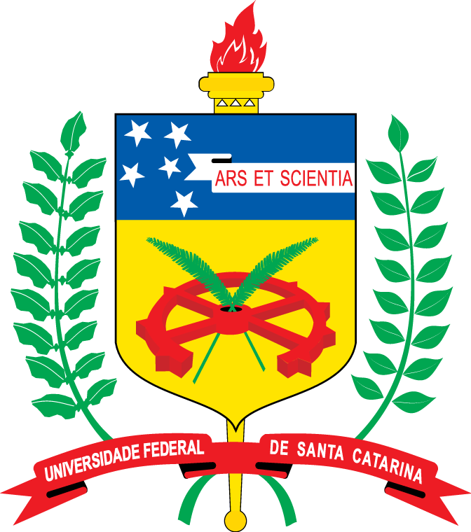

<!DOCTYPE html>
<html lang="en">
<head>
  <title>|\|370</title>
  <meta charset="UTF-8">
  <meta name="p:domain_verify" content="068c3bad40dfa875ca0ba87cf709799b"/>
  <meta name="viewport" content="width=device-width, initial-scale=1, maximum-scale=1, user-scalable=no">
  <link rel="icon" type="image/png" href="favicon.png" />
  <link rel='stylesheet' type='text/css'href='http://fonts.googleapis.com/css?family=Bree+Serif|Bitter'>
  <link rel='stylesheet' type='text/css' href="//maxcdn.bootstrapcdn.com/font-awesome/4.2.0/css/font-awesome.min.css">
  <link rel='stylesheet' type='text/css' href="style.css">
</head>
<body>
  <div class="grid column">
    <div id='front'>
      
      <small id='photo-credits' class='absolute top-layer'><a href='http://filipefoto.com/'>filipefoto.com</a></small>
      <h1 id='hello' class='top-layer absolute green-text'>I’m a brazilian seeking out disconfort</br>in Argentina.</h1>
    </div>
    <div id='navigation'>
      <nav class='grid row top-layer'>
        <div class='grid-cell grid row h-center white-text'><h3>CV/Work</h3></div>
        <div class='grid-cell grid row h-center white-text active'><h3>Biography</h3></div>
      </nav>
    </div>
    <div id='work' class='hidden'>
      <h2>Work</h2>
    </div>
    <div id='biography'>
      <div id='summary' class='grid column'>
        <div class='grid-cell'>
          <h2 class='green-text'>Summary</h2>
        </div>
        <div class='grid-cell grid row'>
          <div class='grid-cell-2'>
            <p>On march 3rd 1987 I was born in Juiz de Fora, a city on the border of the brazilian states of Minas Gerais and Rio de Janeiro. My dad was a System Analyst and my mom a management intern, both born in Rio who happened to meet and marry while living and working in that city. At the age of 5, in 1992, I got my first contact with computers.  It was an i386 machine with a black and white tube monitor which I fell in love from the very first moment.</p>
            <p>A couple of years later I would get introduced to computer programming. My dad used to pick up exercises for me from a photocopied VB 3.0 manual and that's how I wrote my first lines of code. In 1998 I had my first contact with HTML and by this time the Internet was already playing a big role in my life. I would spend my days on IRC chat rooms, gaming and hacking the OS. At the same time music making came into my story and I first heard about Java and Linux.</p>
            <p>The years passed and I developed interest on MIDI applications to use with my keyboard piano. I dreamed about the day my dad would give me that tablet which would help me to model 3D game cenarios and graphics for my Flash websites. Through out my life I always found ways of taking advantage of this wonderful object with which I grew up by. Today, looking back to my life history I become amazed by how technology has evolved. There is basicly no limit to what you can do with computers and my work today is to help people to take advantage of this power in their lifes one step at a time, just the way it happened to me but faster.</p>
          </div>
          <div class='grid-cell to-the-end grid column'>
            
            
          </div>
        </div>
      </div>
      <div id='education' class='grid column'>
        <div class='grid-cell'>
          <h2 class='green-text'>Life and education</h2>
        </div>
        <div class='grid-cell grid row'>
          <div class='grid-cell grid column'>
            
            
            
            
            
            
            
          </div>
          <div class='grid-cell-2'>
            <p>Technically I’m just a rebel college dropout still dreaming with a formal academic degree. Now living in Argentina I’m enjoying what is one of the few advantages one can have as a citizen in this country: free, accessible public education. Back in Brazil the situation is completely different and in order to have access to free higher education one must go through an unhealthy competition they call Vestibular. Those who can’t approve, as I did, got to try again on the next year or go to a private institution if able to afford one. In that country most private institutions are garbage. Some, the priciests, get the job done for some carreers. In my experience I joined three of them and learned everything but how to pass exams and adapt to society.</p>
            <p>This voyage started ten years ago when I kicked off on the Law school at Pontifícia Universidade Católica do Rio de Janeiro, or just PUC as people call it. I never really wanted to do that, but anxiety and family pressure took me in. My dream at that time was to become free from my parents economic dependency but also wanted to make them feel proud about me. Actually I just wanted to be part of something. In July 2004 I was 18 and have lived most of my life unhappy with the way the world is. I used to complain about myself, my friends and my parent’s relationship. I was actually upset about almost every aspect of my life. I couldn’t understand existence and struggled to find a reason to keep going.</p>
            <p>It turns out that my first attempt to get a diploma and live the successful adult life failed. My way of living wasn’t coherent with the routine I encountered studing at that institution. The little moments of joy I had were all related to outside and radical sports, music, girls and marijuana. I just couldn’t adapt to an everyday two hours commit back home from college even though I was doing it driving my own car, a gift from my family for being a good child.</p>
            <p>After an year I decided to make a shift into what I thought was a better solution to the urge I had to live the ultimate happy life. I wanted to have the best people around me, the best clothes, the best skills, wanted to be at the best places, everything as subjective as it looks like. I desired a wonderful, impossible, fulfilled, altruistic, intellectual life and I didn’t wanted to disappoint my parents who already had spent an year on private college wishing only the best for me.</p>
            <p>So I changed and started from scratch in another renowned private institution, Escola Superior de Propaganda e Marketing or just ESPM. The Law school wasn’t giving me a perspective on making anytime soon the kind of money I was wishing to make therefore I decided to become a Design student. I knew I had learned a few good things in the past year and knew I could take advantage of my computer knowledge by studying a Visual Communication carreer so I did it.</p>
            <p>Time went by and I was quite happy with my new path except for one thing. The price my parents were paying for my education was at the moment probably 5 times the minumum wage in Brasil. That life I was living was simply unsustainable from my point of view and the more I advanced on that carreer the more I realized that it was no different from my previous experience. The graduated Design student would get paid a misery outside on the market and internships were simply an excuse for labour exploitation. I was disappointed once again.</p>
            <p>By the second half of 2009 I was already less than 2 years away from my graduate diploma on Graphic Design. However the economic situation of my parents and their relationship had deteriorated a lot in this period of time and myself, I became deeply involved in a toxic relationship that took me into none but desgrace. That period was one of the worst in my whole existence. I was completly lost and detached from all the values that firstly motivated me in my actions. I was certainly far from acomplish my goals and definetly needed to change.</p>
            <p>Following a colleague who had just arrived from an year long  student exchange program in Portugal, I decided to leave ESPM and  finish my graduation on another, cheaper private institution. In august 2009 I joined Centro Universitário da Cidade, or simply UniverCidade longing to spend less on college tuitions. I did it and I knew I wouldn’t graduate this time, I just couldn’t assume it to myself. My parent’s expectations had morphed into a life trauma and although I felt ready for duty, the market wouldn’t open it’s doors for me. In fact I wasn’t ready for that market. One year later I would give up my Design degree altogether throwing all that money and time straight into the trash can.</p>
            <p>Five years passed since the first time I stepped into a private college classroom. I knew I had learned a lot and I couldn’t understand why I failed so many times. I couldn’t accept I was the only one to blame for not being successful after seeing what I saw going on at those private academic institutions. I realized that formal education was a big trap, at least private formal education. I knew I had to try the public path one more time.</p>
            <p>In march 2012, after a period dedicated full time to some personal projects I finally joined a public university. This time it wasn’t Rio de Janeiro, but Florianópolis a capital city in the south of Brazil. I thought I had the perfect plan but as the days came through, I realized I was wrong once again. On the second half of 2012 the workers at Universidade Federal de Santa Catarina —UFSC— stopped demanding solutions. Obviously I joined them and finished this year not approving a single course. Anyway, for the first time as a college student I felt I was  really part of something bigger. The public university offers a handful of opportunities for those who get there and it doesn’t matter what carreer you’re studing, the point is to claim your rights over something you deserve as a constitutional right in a democratic nation that protects the basic human rights.</p>
            <p>Yes, I left again. Studing computational mathematics is not easy and I idn’t managed to sustain myself this time without a job. Employers still couldn’t absorb me and my family wasn’t able to help me anymore. I realized I would have to raise the white flag for a moment and submit myself to any job that could help me pay for my way of thinking. In 2013 I worked in three different jobs. First for two days as a secretary desk on a farmaceutical products distributor. After that I found a part time job on the weekends as designer for a daily print sports newspaper. In june 2013 I finally got a formal job. For aproximatly 4 months I worked as a managed services technician for an IT multinational serving a brazilian public giant, then I left.</p>
            <p>I left because I couldn’t do my job and I left because the money I was getting doesn’t made me able to afford a place to live. At this moment I was a 26 years old guy living in a appartment where used to be a home for me, my brother an my two parents. Now it was occupied by me, my brother, our girlfriends and my mom. There wasn’t a family anymore, there wasn’t a home anymore so I had to change one more time.</p>
            <p>This time I’m trying in another country where I managed to get back my peace of mind. I’m back into a public university where I hope to become a teacher. I don’t regret about any of the choices I made in the past. I’m still 27 and I’m full of different experiences to share which luckly will help me to become a valuable professional in the years to come. At this moment I can only say I have some design and engineering skills. I don’t have a shiny portfolio and I don’t have a wondeful title to exhibit. Surely I’m educated and certainly people will find on me a valuable person. Maybe in the years to come I’ll be able to satisfy all of my expectations as it should. I’m someone who always bet on educate myself and worked really hard to get to the point I’m at right now. I know one day I’ll find success in formal education but for now it is still yet to come.</p>
          </div>
        </div>
      </div>
    </div>
    <div id="footer" class='grid column'>
      <div class='green-text grid h-center'>
        <h4>Find me online somewhere, I'm social!</h4>
      </div>
      <div id='social' class='grid-cell grid row'>
        <a href='https://www.linkedin.com/pub/dylson-valente-neto/5b/a77/6a6'><i class="fa fa-linkedin-square"></i></a>
        <a href='https://github.com/n370'><i class="fa fa-github"></i></a>
        <a href='https://codepen.io/n370/'><i class="fa fa-codepen"></i></a>
        <a href='https://www.behance.net/n370'><i class="fa fa-behance"></i></a>
        <a href='https://twitter.com/n370n370'><i class="fa fa-twitter"></i></a>
        <a href='https://www.youtube.com/channel/UCtYLrxplikxcqfeaWv8rEkw'><i class="fa fa-youtube"></i></a>
        <a href='https://n370.tumblr.com/'><i class="fa fa-tumblr"></i></a>
        <a href='http://www.pinterest.com/n370n370/'><i class="fa fa-pinterest"></i></a>
        <a href='https://plus.google.com/+DylsonValenteNeto'><i class="fa fa-google-plus"></i></a>
        <a href='https://bitbucket.org/n370'><i class="fa fa-bitbucket"></i></a>
        <a href='https://dribbble.com/n370'><i class="fa fa-dribbble"></i></a>
        <a href='https://stackoverflow.com/users/1700479/n370'><i class="fa fa-stack-overflow"></i></a>
        <a href='https://soundcloud.com/n370/'><i class="fa fa-soundcloud"></i></a>
        <a href='https://www.slideshare.net/n370'><i class="fa fa-slideshare"></i></a>
        <a href='https://n370n370.deviantart.com/'><i class="fa fa-deviantart"></i></a>
        <a href='https://secure.flickr.com/photos/69710706@N04/'><i class="fa fa-flickr"></i></a>
        <a href='https://www.reddit.com/user/n370/'><i class="fa fa-reddit"></i></a>
        <a href='skype:dylsonvalenteneto'><i class="fa fa-skype"></i></a>
        <a href='https://angel.co/n370'><i class="fa fa-angellist"></i></a>
        <a href='https://delicious.com/n370'><i class="fa fa-delicious"></i></a>
        <a href='https://vimeo.com/n370n370'><i class="fa fa-vimeo-square"></i></a>
      </div>
    </div>
  </div>
  <script src="script.js"></script>
</body>
